nesta pagina, nos vamos falar sobre os diferentes locais que o jogador pode ir em Fallout 1
vault 13
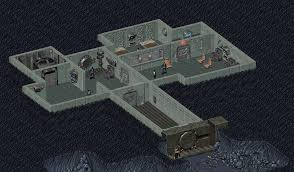A casa do Vault Dweller. A primeira missão do jogo é encontrar um substituto para o chip de purificação de água quebrado do Vault. Nenhum dos habitantes tem permissão para sair do vault, sob a liderança do supervisor do vault, que está dedicado a protegê-los e abrigá-los. O vault 13 provavelmente estava localizado sob o Monte Whitney, pois corresponde aproximadamente à localização da montanha. O vault 13 também pode se referir a uma montanha no Vale de Indian Wells, dentro dos limites da Estação de Armas Navais em China Lake, conhecida como Montanha B. A montanha se parece muito com ilustrações do local no jogo e há rumores de que tenha um grande centro de pesquisa subterrâneo dentro dela.
vault 15
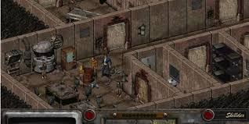Este vault já foi ocupado por um grande número de pessoas de ideologias e culturas muito diferentes. O superlotação e a diversificação levaram quatro grupos diferentes a sair, três deles formando cada um um grupo de saqueadores - os Khans, as Víboras e os Chacais - e um deles se estabelecendo e fundando Shady Sands. O vault 15 é agora o covil de vários animais mutantes. Um chip de purificação de água não pode ser encontrado aqui.
shady Sands
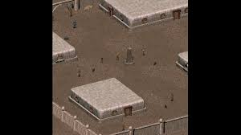Um grupo de ex-residentes do vault 15 fundou uma pequena vila entre o vault 13 e o vault 15. shady Sands é liderada por Aradesh, que pede ao Vault Dweller que ajude a se livrar dos radscorpions que estão ameaçando a vila. Aqui, o Vault Dweller pode recrutar Ian, um viajante e atirador experiente, para seu grupo. Também é possível "recrutar" Tandi, a filha de Aradesh, não a devolvendo à cidade após seu sequestro. Um obelisco no centro da cidade tem a inscrição "Em lembrança da esperança e da paz"
base dos Khans
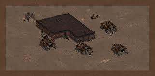Um clã de saqueadores conhecidos como os Khans, liderados por um homem chamado Garl, montou um acampamento perto de Shady Sands. Tandi, a filha de Aradesh, é eventualmente sequestrada pelos saqueadores do acampamento, e cabe ao Vault Dweller salvá-la, escolhendo entre uma variedade de métodos.
Junk Town
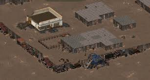Cercada por pilhas de carros destruídos, Junktown é administrada pelo proprietário da loja Killian Darkwater, que também é o xerife e neto do fundador da cidade. Os portões de Junktown são fechados à noite, e portar armas não é permitido, exceto em legítima defesa. Gizmo, o dono do cassino da cidade, quer Killian morto porque ele "prejudica [meu] negócio". O personagem jogador pode escolher ajudar Killian ou Gizmo. O Habitante do Abrigo também pode recrutar Tycho, um ranger, e Dogmeat, um cachorro selvagem, para seu grupo.
O Hub
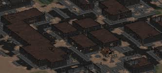Como uma cidade comercial importante, o Hub é o local com mais missões do jogo. É dividido em vários distritos, cada um controlado por um grupo poderoso de pessoas: os Mercadores de Água, a Caravana Carmesim e os Comerciantes Far Go. Aqui o Vault Dweller pode enviar mercadores de água para o Vault 13 para estender o prazo no qual deve encontrar um chip de água.
necropolis
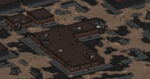Os restos do que era antes Bakersfield, Califórnia. Dominada por ghouls e contendo um vasto sistema de esgotos, a Necrópolis é o resultado do Vault 12. O Vault 12 foi projetado pela Enclave para que sua porta não pudesse fechar e os ocupantes do abrigo fossem expostos a altas doses de radiação. Isso levou à transformação de seus habitantes em ghouls após a Grande Guerra. Os ghouls foram divididos em três grupos: os habitantes da superfície, que são os mais numerosos, e paranoicos em relação a não-ghouls e forasteiros; os irradiados, ghouls fortemente irradiados, rejeitados até mesmo pelos seus, e os chamados ghouls subterrâneos, que vivem nos esgotos da cidade. É aqui que o Habitante do Abrigo encontra o chip de água enquanto observa uma invasão incomum de supermutantes, que pode ser uma séria ameaça ao futuro da humanidade.
o boneyard
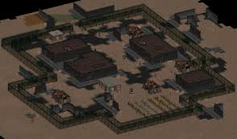O Boneyard, também conhecido como Angel´s Boneyard, é a porção restante da paisagem urbana de Los Angeles. Esta é uma das cidades que o Vault Dweller pode visitar mais tarde, recebendo melhorias para equipamentos de final de jogo: o rifle de plasma turbo e a power armor endurecida. O personagem jogador também pode recrutar Katja aqui.
Lost Hills
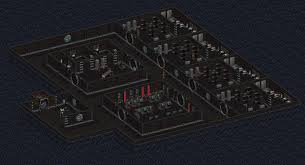Este vault é a sede da Brotherhood of Steel, mostrada como "Brotherhood of Steel" no Pip-Boy 2000, uma organização com raízes no exército dos EUA e na comunidade científica patrocinada pelo governo antes da Grande Guerra. O posto avançado é composto por quatro níveis subterrâneos; com o nível um mais próximo da superfície e o nível quatro o mais distante sob a terra. O nível zero é a entrada ao nível do solo.
o Glow
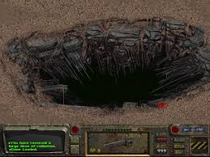Anteriormente conhecido como Instalação de Pesquisa West Tek, O Brilho é agora uma ruína irradiada. É aqui que foram conduzidos experimentos com armas a laser e de plasma, e o desenvolvimento do FEV e da Power Armor ocorreu. O Glow é controlado por um mainframe chamado "ZAX". O objetivo do Vault dweller é recuperar uma evidência para a Brotherhood of Steel, que é um holodisco deixado por um membro caído da Irmandade de Aço, que prova que ele entrou na localização. A dificuldade desta missão é que O Brilho é altamente radioativo, e o personagem jogador deve consumir drogas antirradiação para sobreviver à visita. Um personagem jogador que não esteja ciente dos altos níveis de radiação desta zona rapidamente sucumbiria à radiação.
Base Militar de Mariposa
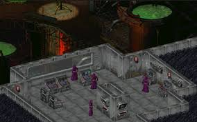Esta antiga base militar é onde a pesquisa foi conduzida sobre o FEV (que anteriormente era realizada na Instalação de Pesquisa West Tek). É aqui que novos supermutantes são criados.
A Catedral
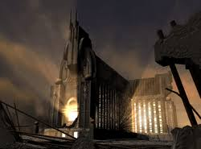A Catedral é o lugar onde a organização Children of the Cathedral, que é uma fachada para os planos do Mestre, pode ser encontrada. Sob a Catedral, há um vault secreto, onde o Mestre reside.